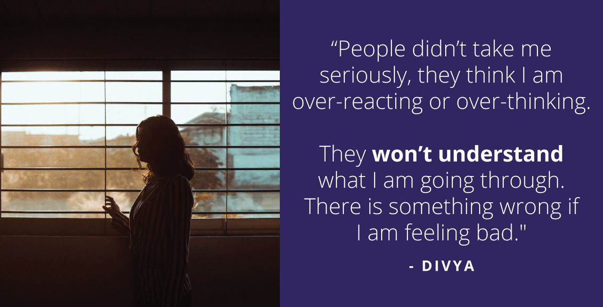

Climbing the Ladder of Motivation and Leaving Behind Stress: This is Divya’s Story.
From the lands of folk music and embroidery – Haryana, comes Divya. Our young zestful, vibrant, full-of-life 25-year-old, who is an easygoing, jolly person and loves interacting and socialising with people.
She has completed her masters from India’s renowned institute. Her love for science led her heart and soul into Chemistry and is now a student in Chemistry (PhD). Apart from her geek factor she is also into drawing/sketching, skipping, and cycling.
The problems began to surface when she got assigned to another institute.

“The non-teaching staff on campus was very uncooperative. I had to clean the terribly dirty room on my own.”
The new institute was not as welcoming as her previous one. Untidy rooms, poor lab equipment, disorganised management of the staff really got to her.
Usually she would not mind these things, but coming down to a new place and working on a PhD was taxing enough for her. She did not need this to add up to her stress.
Apart from the hostel mismanagement, the campus itself needed a lot of mending.
Being a keen observer of her surroundings, Divya began noticing quite a lot of things happening on the campus.
“For any kind of work, motivation is needed, and in PhD, stipend is that motivation to work.”
The first few weeks went in interacting with seniors, friends and family back home, sharing her concerns about the campus life. However, she was discouraged for expecting the basic minimum.
As if the poor lab equipment was not enough to be problematic, the processing of stipend created further difficulties.
The board failed at initiating and processing the stipend amount of the students. They did not receive their stipend until the end of the semester.
All the students were distressed and came together to make a kind of movement to catch the management’s attention.
“One day the students decided to form a union and reach out to the director of the institute. And I was the representative for the Science department.”
All the students were determined to create an impact, and with their share of difficulties, they finally got an appointment to address their concerns with the director.
However this light of hope did not glimmer for too long. The director failed to attend the meeting and instead his secretary was asked to note down the issues. While the issue was resolved, it consumed a lot of time.
“I sent out nearly 400 emails, literally. It wasn’t an easy task. With each email, I was expecting a positive response.”
Divya could not adapt to the disorganisation of the institute. She began looking for new institutes within the country as well as abroad.
Each day seemed long-drawn-out. Every email that turned unresponsive, a pinch of stress was mounting on Divya
All the competitive exams including GRE, GMAT and more, along with preparing documents like SOPs and LORs began wearing her out.
Frustration shot up and demotivation took over the control. It was time for her to step in and reach out for help.
“If something feels wrong, then asking for help is not a big deal. It doesn’t make you weak. We must reach out to people from time to time.”
Divya reached out to YourDOST through her organisation’s association.
As she was absolutely new to the world of counseling, she took every step cautiously.
But she knew one thing – to trust the process and believe in herself to continue.
She connected with Chitrank, who helped her throughout the entire process. Right from opening an account with YourDOST to a bit of technical support in terms of scheduling appointments.
“Chitrank’s first impression was absolutely perfect. As I was new to the platform and didn’t know how things worked, he was the one who gave me complete information and support on the platform.”
She trusted Chitrank and continued with ghim for all her sessions.
A number of techniques were recommended to her for managing her stress and anxiety. One of the techniques called JOHARI window, helped her to understand her friends’ and family’s qualities and characteristics. That helped her to communicate better with them.
Another method was the 5-4-3-2-1 technique that she was supposed to use whenever she was apprehensive about panic attacks.
She followed these methods with her heart and began seeing new changes in her behaviour and thinking. Family noticed reduced frustration and anger in her.
She was able to get rid of her sugar cravings that used to spring from her stress earlier.
The storm was calming down and the waves slowed down.

“I am so thankful to Chitrank. He not only helped me through the counseling sessions, but I was also able to write my SOPs with him.”
Today she has taken over the wheel of control and steering in the right direction in her life. She knows she has come a long way and has felt life becoming intense, but she now “keeps working” with a steady mind.
Counseling sessions have been beneficial to her and changed her outlook towards studying abroad.
She rated herself an incredible score of 5 on 5 in terms of getting better each day. The path she has been on was rough but she made it through and has emerged victorious in the end.
She is more confident, beautiful and empowered! She is Divya!
Divya’s Warrior Tips:
1.“Counseling is different from medical treatments. It doesn’t treat your depressions, but changes the way you perceive it”
2. Reach out for help and trust the counselors with the process.
3. “Sometimes people fail to understand how seriously small things are affecting you, so they might not be able to help. But counselors know what they are doing.”
#LetsTalk